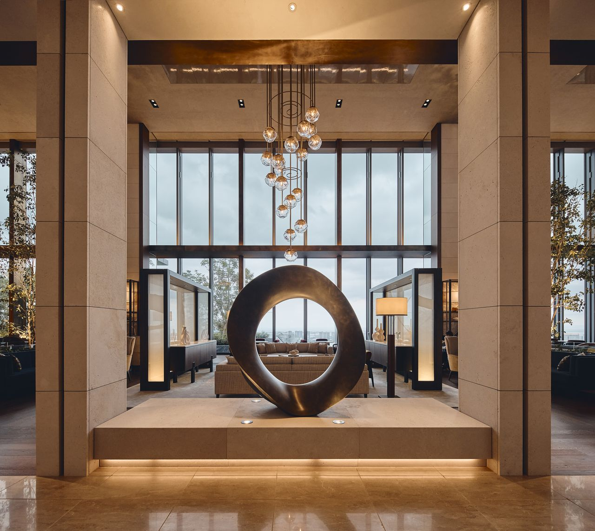
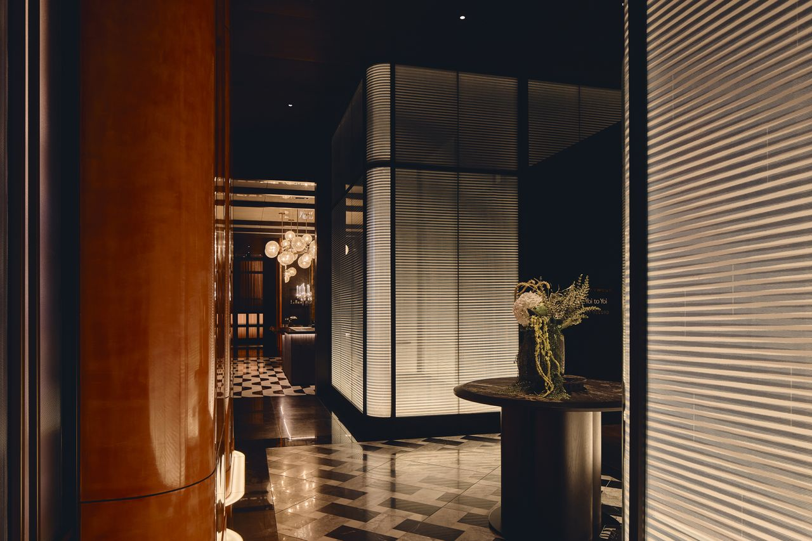
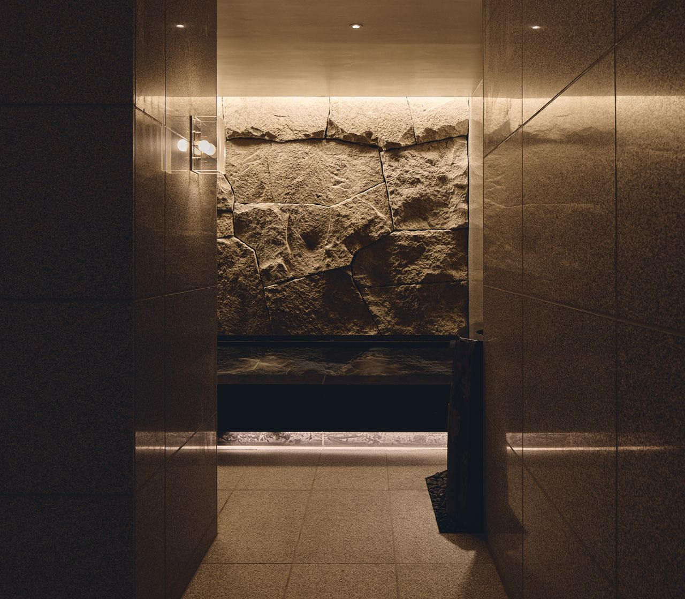

Fairmont arrives in Japan five months in. Two hundred and seventeen rooms slipped into the upper levels of a new Maki & Associates tower on the Shibaura waterfront, with a Labrador at the door and a listening room on the forty-third floor.

Vue Mer, level 35, Fairmont Tokyo
The lift opens onto level 35. Floor-to-ceiling glass, the bay laid out on one side, Tokyo Tower on the other. The lobby is called Vue Mer, which is fair enough. By day it works as a lounge. After six it shifts into a bar. A Berlin-based artist, Tomislav Topić, has hung an ethereal installation over the seating that references washi paper. There is a sculpture by Mari-Ruth Oda. A custom chandelier by Bar Studio cascades through the double-height void. The light moves with the harbour.
Shibaura is not the obvious district for a Tokyo hotel. Once a fishing village, then an industrial port, it now sits inside Blue Front Shibaura, a new waterfront development a few minutes from Hamamatsucho station. Kyu-Shiba-rikyū Gardens is a short walk west. Hamarikyu Gardens follows the canal further on. Zōjō-ji Temple stands at the foot of Tokyo Tower. The bay carries the air. The trains carry you to Harajuku in eleven minutes.
The arrival
The journey begins below ground. A street-level lobby, soft lighting, lounge seating, and Serene, the resident black Labrador, who is listed on the staff directory as chief happiness officer. From there the lift travels to the sky lobby, which is where the hotel really begins. The terrace off the concierge desk holds a sculpture by Vídé Création built around the connection between earth and sky. Bar Studio’s glass pendant lights drop above the desk. The transition from the city to the room is unusually patient.
Two architectural studios share the credits. Maki & Associates designed the tower. Bar Studio handled the interiors, and the studio’s instinct for blurring boundaries between inside and out comes through in almost every room. Sen timber. Cloud-white quartzite. Brushed brass. Genkan-style entries. Engawa-inspired seating set against the glass. Karakami woodblock prints by Aiko and Takuma Noda. Hand-drawn calligraphy by Shun-Yo, made with crushed shell for a pearl finish.
The room to book
Two hundred and seventeen rooms, ranging from 52 to 278 square metres, between floors 36 and 42. Textured wallcoverings printed with Japanese weaving motifs. Custom carpets that echo the linear patterns of Zen gardens. Bathrooms in textured granite, which is the hotel’s gentle nod to onsen. Le Labo Santal 33 in the bottles. The Fairmont Gold Tokyo Tower View King Suite is the one to ask for. The crimson glow of the tower at night sits squarely in the window. A separate Fairmont Gold lounge upstairs handles breakfast, afternoon tea, evening canapés and a free pour through the day.
If the Gold tier is unavailable, the Shibaura Suite has a custom work desk angled directly at Tokyo Tower. It is a more useful suite than most.
Service is attentive without theatrics. The Gold lounge lets you graze, decompress and recalibrate all day.
Sienna CaldwellThe dining floor

Driftwood and Yoi-to-Yoi, level 43, Fairmont Tokyo
Five rooms across two floors. On level 35, Kiln & Tonic runs Mediterranean and Southern Californian flavours through pizzas, grills and charred seafood, with an outdoor terrace pointed at the tower. Vue Mer holds the afternoon tea and slides into a cocktail room after dark. Migiwa is a six-seat counter for seasonal seafood. Totsuji handles Wagyu and a Parmigiano-crisped okonomiyaki via teppanyaki, which is unexpected and good.
The level-43 bar floor is the headline. Driftwood does Yōshoku, the Japanese style of Western-influenced cuisine that Tokyo families have been eating for a century. Scallops shoyu-yaki with edamame purée and caviar beurre blanc. Kagoshima Megumi black pork katsu in a house sauce. The terrace continues outside the glass. Through a quieter door is Off Record, the cocooned listening room of vinyl, rare spirits and soulful bites; Bar Studio designed the chandelier here from illuminated bubble-textured resin, and the light pools low. Yoi-to-Yoi, the standing bar next door, is where the locals drink.
The spa

Fairmont Spa, level 35, Fairmont Tokyo
The spa sits on level 35 and continues the building’s pursuit of stillness. A monolithic quartzite island bench anchors the atelier. Treatments begin with a scent blend chosen from seeds and spices on a tray. The signature ritual is called Self-Love, a magnesium protocol of dry-brushing, warm basalt stones charged under the full moon, and a slow restorative massage. A 24-hour Technogym is available for the jet-lagged. Private studios run yoga and Pilates. The 20-metre indoor infinity pool is paired with a sauna and an outdoor sundeck. Drift between them.
The neighbourhood
Shibaura rewards a slow morning. Kyu-Shiba-rikyū Gardens for forty minutes before the heat. The fish market and vendor stalls along the canal. Hamarikyu Gardens via the bayside path, then a green tea at the floating Nakajima-no-ochaya. Zōjō-ji at dusk, with the tower lit overhead. The Yamanote Line is a five-minute walk and runs the city in a loop. The hotel’s concierge is unusually patient with itineraries that involve a temple, a vintage bookshop and a small bar in Golden Gai on the same evening.
The verdict
Japan is exacting on hospitality, and a foreign brand can take years to find its footing. Fairmont Tokyo, five months in, already has the rhythm. Service is attentive without theatrics. The Fairmont Gold lounge is the standout, the place where the hotel feels most fully itself. The art holds the building together. Bar Studio’s curves keep the room from ever being austere. The contrast of harbour stillness and city energy is the point of staying here.
Take a high room facing the tower. Eat upstairs at Driftwood on the first night. The next morning, walk to Kyu-Shiba-rikyū before the heat. Tokyo from here is a slower city than the brochure promises.
The Splendid Edit visited Fairmont Tokyo in spring 2026. Rooms from JPY 127,600 per night. Book through fairmont.com/tokyo.
Photography by Peter Bennetts, courtesy of Fairmont Tokyo, via Wallpaper*